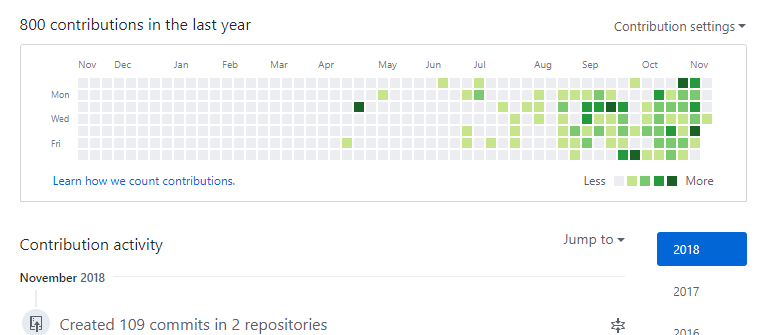
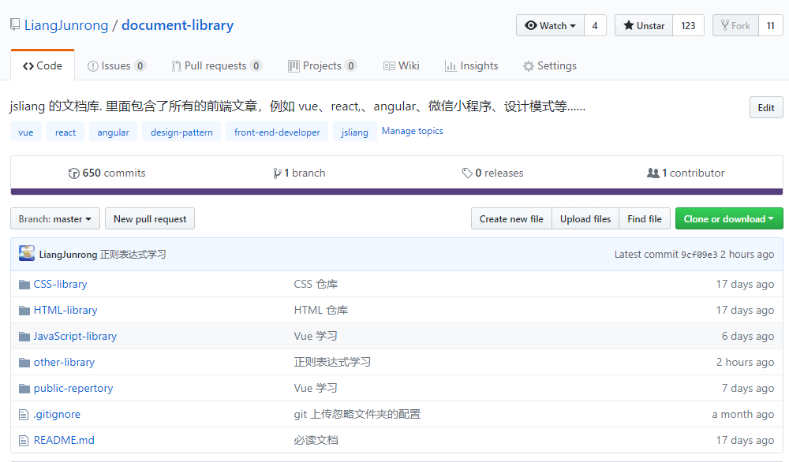

日志 - 2018-11
Create by jsliang on 2019-05-24 13:56:03
Recently revised in 2019-05-24 13:58:22
2018年11月 - 2019年3月进阶指南
你，是否对自己目前的工作内容很不满意？
你，是否已经厌倦了公司内部的尔虞我诈？
你，是否想要学习更多的技术换份新工作？
我，是的……
一 对比清单
| 目前现状 | 进阶目标 | |
|---|---|---|
| 坐标： | 广州 | 广州、深圳 |
| 薪资： | 5.5K | 10K+ |
| 职位： | 前端工程师 | 前端工程师 |
| 工作经验： | 半年(应届生) | 一年 |
| 工作内容： | 1. 使用 jQuery 进行电信活动页的编写 2. 进行 Java 的 JSP 页面的维护 3. 进行 PHP 开发的公众号中 H5 页面的开 4. 小程序的开发与维护 |
1. 能使用 Vue 全家桶进行项目开发 2. 有 Node.js 编程经验，并进行过 Node.js 实践 3. 熟悉 HTTP 协议，了解项目性能优化方法 4. 熟悉 ES6，并尝试在项目中使用过 ES6 设计模式 |
| 拥有技能： | 1. 知道基础的 HTML、CSS、JavaScript，基本的 PSD 图能完美切成网页 2. 了解并会使用 jQuery 进行 3. 有微信小程序相关的开发经验 4. 学习过 Webpack 中文文档，并搭建过 Webpack 多页面配置 5. 曾经使用过 ElementUI + Express + MongoDB 做毕业设计 6. 曾经使用过 Bootstrap + ThinkPHP + MySQL 做博客 7. ……其他省略，不值一提 |
1. Vue 基础知识 2. Vue-Router 3. Vue-Cli 4. Axios 5. Node 基础知识 6. Koa 7. MongoDB 8. MySQL |
二 实践进度
- 【10-25】想用 Vue + Koa + MongoDB 搭建一套商城，于是学习 jspang 的教程。
- 【10-28】跟着学习了几天，发现一些基础知识真的忘得差不多了，不知道 Vue 基础知识，不知道 Node 基础知识，不知道 Koa 怎么玩，好纠结，好难受。
- 【10-29】敲下 Vue 的 README 文章，开始 Vue 学习。
【11-08】发现自己所有知识点都塞进一篇文章了，感觉不好，所以拆分成 VueBase、VueRouter、VueCli、Axios 这四篇文章。同时，发现自己 Axios 没法跟着教程下去了，想搞点 Node 基础，弄个 Koa 服务来帮助自己。
目前笔记
-> Vue + Koa2 + MongoDB 搭建商城
-> Vue 开篇
-> Vue 基础
-> VueRouter 学习
-> VueCli 实践
-> Axios 探索
三 留笔做念
不单单是留念，更想去实现！
Follow me~ 坚持每天更新自己！
我们，每周一更新，一起关注彼此进度!


留笔名单：
| 姓名 | 最新更新 | 加入时间 | 缺更记录 |
|---|---|---|---|
| jsliang | 2018-11-14 | 2018-10-25 | 11-10、11-11、11-12、11-13 |
| 何穗君 | 暂无 | 2018-11-14 | 暂无 |
| 更多... | 更多... | 更多... | 更多... |
↓ ↓ ↓ ↓ ↓ ↓ ↓ ↓ ↓ ↓
【点我了解入群姿势】（已过期）
↑ ↑ ↑ ↑ ↑ ↑ ↑ ↑ ↑ ↑
jsliang 的文档库 由 梁峻荣 采用 知识共享 署名-非商业性使用-相同方式共享 4.0 国际 许可协议进行许可。
基于https://github.om/LiangJunrong/document-library上的作品创作。
本许可协议授权之外的使用权限可以从 https://creativecommons.org/licenses/by-nc-sa/2.5/cn/ 处获得。